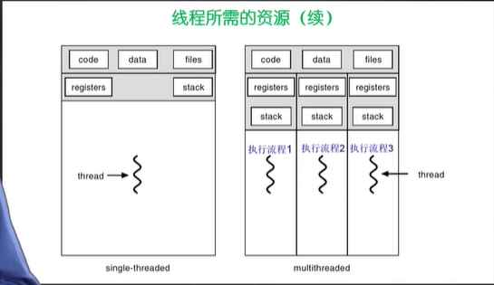

线程（Thread）管理
为什么使用线程？
MP3播放软件核心模块：
1、从MP3文件中读取数据；
2、对数据进行解压
3、解压后的音频数据播放出来
多个进程之间通信、共享数据，维护进程的成本都很大，如何解决这些问题：
- 实体之间可以并发地执行
- 实体之间可以共享地址空间
这种实体就是线程
什么是线程
Thread：
- 进程中的一条执行流程
从两个方面理解线程：
- 从资源组合的角度：进程把一组相关的资源组合起来，构成一个资源平台，包括地址空间、文件和各种资源
- 从运行的角度：代码在这个资源平台上的一条执行流程（线程）
线程=进程-共享资源
优点：
- 一个进程中可以同时存在多个线程；
- 各个线程可以并发执行
- 各个线程之间可以共享地址空间和文件等资源
缺点：
- 一个线程崩溃，会导致其所属进程的所有线程崩溃。（破坏资源）
不同的操作系统对线程的支持
- MS_DOS 单进程单线程
- Unix 多进程单线程
- 现代操作系统 多进程多线程

线程与进程比较
- 进程是资源分配单位，线程是CPU调度单位；
- 进程拥有一个完整的资源平台，而线程只独享必不可少的资源，如寄存器和栈；
- 线程同样具有状态（就绪、阻塞和执行），同样有状态之间的转换关系；
- 线程能够减少并发执行的时间和空间开销
- 线程创建比进程快
- 线程终止比进程快
- 同一进程的线程切换时间比进程短
- 由于同一进程的各线程间共享内存和文件资源，可直接进行不通过内核的通信。
用户线程
- 在用户空间实现的线程机制，不依赖于操作系统的内核；
- 由一组用户级的线程库来完成线程的管理，包括创建/终止/同步/调度；
优点：
- 不需要操作系统内核了解用户线程的存在，可用于不支持线程技术的多进程操作系统；
- 每个进程都需要它私有的线程控制块TCB列表，来跟踪记录它各个线程的状态信息(PC/栈指针/寄存器),TCB由线程库函数来维护；
- 用户线程的切换由线程库函数实现，无需 用户态/核心态切换，所以速度快；
- 允许每个进程有自定义的线程调度算法。
缺点：
- 如果一个线程发起系统调用而阻塞，则整个进程都在等待；
- 如果一个线程开始运行，除非它主动交出CPU，否则该线程所在进程的其它线程都无法运行；
- 由于时间片分配给的是进程，所以与其它进程相比，在多线程执行时，每个线程得到的时间片较少，执行会较慢。

内核线程
-
是指在操作系统的内核中实现的一种线程机制，由操作系统的内核来完成线程的创建，终止和管理。
-
由内核维护进程和上下文信息，也就是进程/线程控制块PCB/TCB；
-
线程的创建/终止/切换都是通过系统调用或内核函数来实现(内核实现)，所以系统开销大；
-
在一个进程中，如果某个内核线程发起系统调用而阻塞，不会影响其它内核线程的运行；
-
时间片分配给线程，多线程的进程能获得更多的CPU时间；
-
Windows NT/2000/XP 支持内核线程。

轻量级进程(lightweight process)
他是内核支持的用户线程。一个进程可以有一个或多个轻量级进程，每个轻量级进程由一个单独的内核线程来支持(Solaris/Linux)。